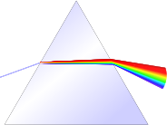
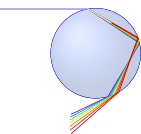
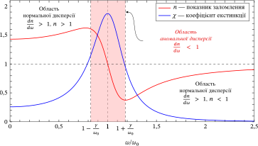
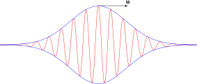

Дисперсія світла — явище, обумовлене залежністю показника заломлення речовини від частоти електромагнітних хвиль (або довжини хвилі), які в ній розповсюджуються:
\(\seteqnumber{0}{3.}{0}\)
\begin{equation}
n = f(\lambda ).
\end{equation}
Якщо показник зменшується зі зростанням довжини хвилі \(\frac {dn}{d\lambda } < 0\), то дисперсія називається нормальною, якщо збільшується — \(\frac {dn}{d\lambda } > 0\), то аномальною. Аномальна дисперсія має місце на вузьких неробочих ділянках спектру
поблизу ліній поглинання.
Конкретні оптичні матеріали характеризуються середньою дисперсією показника заломлення речовини:
де \(\sigma _0\) мінімальний кут відхилення променя призмою; \(\theta \) — заломлюючий кут призми; \(n\) — показник заломлення матеріалу призми.

(а) Дисперсія в призмі

(б) Дисперсія в дощовій краплі
Рис. 3.1. Прояви дисперсії
Дисперсійна формула Коші, що застосовується для апроксимації експериментальних залежностей \(n(\lambda )\), має вигляд
\(\seteqnumber{0}{3.}{3}\)
\begin{equation}
\label {eq:Cauchi_dispersion} n = A + \frac {B}{\lambda ^2} + \frac {C}{\lambda ^4} + \ldots
\end{equation}
де \(A\), \(B\), \(C\) — сталі величини, що визначаються для кожної речовини дослідним шляхом; \(\lambda \) — довжина хвилі у вакуумі.
Згідно класичної теорії, дисперсія світла виникає внаслідок вимушених коливань зовнішні (оптичних) електронів під впливом змінного поля електромагнітної хвилі, яка взаємодіє з речовиною. Теорія дисперсії розріджених середовищ у яких атоми мають лише один оптичний електрон дає вираз
для комплексної діелектричної проникності:
За умови \(\omega _0 - \gamma \lesssim \omega _0 \lesssim \omega _0 + \gamma \) показник заломлення зростає із збільшенням частоти (рис. 3.2). Такий характер залежності \(n(\omega )\), як було зазначено,
називають нормальною дисперсією.
Для низьких частот (\(\omega < \omega _0\)) показник заломлення більше одиниці \(n > 1\), тобто, фазова швидкість \(v = \frac {c}{n} < c\) хвилі в середовищі менші за швидкість світла у вакуумі. Це означає, що хвиля в середовищі відстає від падаючої хвилі по фазі.
Якщо ж частота світла більша за власну частоту осциляторів (\(\omega > \omega _0\)), то \(n < 1\) і фазова швидкість хвилі в середовищі \(v = \frac {c}{n} > c\) виявляється більше швидкості світла в вакуумі, тобто, хвиля в середовищі випереджає по фазі падаючу.
Цей теоретичний висновок добре узгоджується з дослідними результатами. Так, наприклад, для скла при довжині хвилі близько \(0,1\) нм (рентгенівські хвилі) одержано \(n = 0,999999\), тому для них можна спостерігати явище повного внутрішнього відбивання на межі повітря-скло.

Рис. 3.2. Криві функцій для показника заломлення \(n\) та коефіцієнта екстинкції \(\chi \) поблизу резонансної частоти \(\omega _0\)
Для плазми, яка є іонізованим газом, а також для електронного газу в металах, в якому власні частоти вільних електронів дорівнюють нулю, а коливанням важких іонів можна знехтувати (\(\frac {m_e}{m_n} \ll 1\), \(m_n\) — маса додатного іону) — діелектрична проникність
визначається головним чином вільними електронами. Тому, поклавши в (3.5) \(\omega _0 = 0\), для плазми отримаємо:
Зазвичай, \(\omega < \omega _p\) (приклад радіохвилі ультракороткого діапазону, що падають на іоносферу Землі). В цьому випадку \(n\) є суто уявною величиною (не має дійсної частини), тому з рівняння (3.8) випливає, шо для плазми дійсна \(\Re {(\hat {n})} = 0\). В цьому випадку плазма (або метал) є непрозорою для електромагнітних хвиль. Хвилі при падінні на її поверхню зазнають повного внутрішнього відбивання. При
\(\omega > \omega _p\) уявна частина \(\Im {(\hat {n})} = 0\) і хвилі в розрідженій плазмі, або металі поширюються майже без поглинання (\(\omega \gg \gamma \)). Плазма (або метал є повністю прозорими для електромагнітної хвилі. Границею прозорості є умова
\(\epsilon = 0\), яка досягається за випадку \(\omega = \omega _p\).
3.1.1 Фазова та групова швидкості
Монохроматична хвиля, за визначенням, є нескінченна у просторі та у часі. Реальна хвиля завжди просторово обмежена і випромінюється протягом обмеженого інтервалу часу, а тому не є строго монохроматичною. Проте будь-яку реальну хвилю можна як результат суперпозиції великої
кількості строго монохроматичних плоских хвиль. Тобто реальна хвиля є групою монохроматичних складових.

Рис. 3.3. Приклад пакету хвиль
Під фазовою швидкістю розповсюдження хвиль розуміють швидкість, з якою поширюється поверхня однакових фаз:
\(\seteqnumber{0}{3.}{13}\)
\begin{equation}
\label {eq:pahse_velocity} v = \frac {\omega }{k}
\end{equation}
За відсутності дисперсії фазова швидкість хвиль не залежить від частоти. Тому, якщо є група хвиль різних частот, то всі вони будуть рухатися з однією і тією ж швидкістю і пакет, який вони утворюють у в результаті накладання, при русі не змінює своєї форми, його огинаюча рухатиметься з
тією ж швидкістю, що і хвилі, з яких складається.
Якщо дисперсія є, то огинаюча рухається з іншою швидкістю, ніж швидкості монохроматичних компонент.
Швидкість руху максимуму амплітуди групи хвиль або хвильового пакету — називається груповою швидкістю.
Групова швидкість визначається за формулою
\(\seteqnumber{0}{3.}{14}\)
\begin{equation}
\label {eq: group_velocity} u = \frac {d\omega }{dk}.
\end{equation}
Як легко бачити, зв’язок фазової і групової швидкості маж вигляд:
Фазова швидкість може бути більше швидкості світла, і це не суперечить релятивістській теорії, яка стверджує, що швидкість матеріальних тіл та швидкість сигналу не можуть перевищувати \(c\).
Групова швидкість в залежності від знаку доданку \(\frac {dv}{d\lambda }\) може бути меншою, так і більше фазової, але завжди менше швидкості світла у вакуумі. Коли дисперсії немає (у вакуумі) \(u = v\).
Максимум інтенсивності (енергії) припадає на максимум огинаючої у хвильовому пакеті Тому в тих випадках, швидкість перенесення енергії (а отже, і інформації) хвилею дорівнює груповий швидкості і не перевищує \(c\) у вакуумі.
Поняття групової швидкості не застосовується, коли поглинання середовища дуже велике (область аномальної дисперсії).
§ 3.2 Приклади розв’язування задач
Приклад 18. Показник заломлення прозорої речовини для деякого спектрального діапазону описується двочленною дисперсійною формулою Коші:
\(\seteqnumber{0}{3.}{16}\)
\begin{equation*}
n = A + \frac {B}{\lambda ^2},
\end{equation*}
де \(A > 0\), \(B > 0\). Визначити: а) дисперсію показника заломлення речовини; б) фазову швидкість світла; в) групову швидкість світла.
в) Групова швидкість світла у речовині визначається через фазову за формулою Релея:
\(\seteqnumber{0}{3.}{16}\)
\begin{equation*}
u = v - \lambda \frac {dv}{d\lambda } = \frac {C\lambda ^2(A\lambda ^2 - B)}{A\lambda ^2 + B}.
\end{equation*}
Приклад 19. Напишіть рівняння плоскої хвилі для випадків коли комплексний показник заломлення дорівнює \(\hat {n} = n - i\chi \) та \(\hat {n} = - i\chi \), відповідно. З’ясуйте фізичний зміст таких показників заломлення.
Розв’язок.
Рівняння плоскої хвилі, що поширюється вздовж додатного напрямку осі \(x\) в середовищі запишемо у вигляді:
що уже являє собою рівняння плоскої стоячої хвилі, з амплітудою, що також як і в попередньому випадку, експоненційно спадає.
Примітки: З фізичної точки зору, рівняння вигляду (3.18) описує електричне поле в плазмі за умови \(\omega < \omega _p\). В цьому випадку вводять поняття
глибини проникнення електричного поля хвилі в середовище, яка визначається як відстань, на якій амплітуда електричного поля спадає в \(e\) разів, тобто:
Приклад 20. Знайти число вільних електронів на атом срібла, якщо плівка срібла прозора для ультрафіолетового випромінювання, починаючи з енергії \(8,9\) еВ. Для срібла відносна атомна маса \(A=108\), густина \(\rho =10,5\) г/см\(^3\).
Розв’язок.
Фотону з енергією \(8.9\) еВ відповідає довжина хвилі \(\lambda = 1,393 \cdot 10^{-5}\) см.
Умовою прозорості плазми у речовини на даних частотах є \(\omega = \omega _p\) (див. рівн.(3.13)).
Оскільки \(\omega _p^2 = \frac {4\pi N_e e^2}{m_e}\) (див. рівн. (3.6)),
З означення показника заломлення \(v = \frac {c}{n}\), з іншого боку \(v = \frac {\omega }{k}\), прирівняємо ці вирази \(\frac {c^2}{n^2} = \frac {\omega ^2}{k^2}\) і отримаємо функцію \(\omega (k)\) (дисперсійне співвідношення):
3.2.Що характеризує дисперсія призми? Які значення має \(\frac {dn}{d\lambda }\) нормальній та
аномальній дисперсіях?
3.3.Що характеризує групова швидкість? Як вона пов’язана з фазовою швидкістю?
3.4.Для яких речовин групова швидкість рівна або менше, або більше фазової?
3.5.Вивести залежність групової швидкості від дисперсії показника заломлення речовини \(\frac
{dn}{d\lambda }\).
3.6.Як виражається показник заломлення розрідженого газу через частоту світла поблизу лінії поглинання?
Накресліть приблизний графік цієї залежності.
3.7.Як виражається показник заломлення розрідженого газу через частоту світла поблизу лінії поглинання?
Накресліть приблизний графік цієї залежності.
3.8.В дисперсійній формулі Коші для скла Ф1 в видимій області сталі \(A=1,5878\) і \(B=0,0087\) (для
довжини хвилі в мкм). Визначити для зеленої лінії ртуті (\(0,546\) мкм): а) показник заломлення скла Ф1; б) дисперсію показника заломлення; в) фазову швидкість монохроматичного світла; г) групову швидкість для групи хвиль з центром в \(0,546\) мкм. [відповідь]
3.9.Для рівносторонньої призми з скла ТК12 експериментально визначені мінімальні кути відхилення
\(43^\circ 57'39''\), \(43^\circ 32'2''\) та \(43^\circ 7'5''\) для променів трьох довжин хвиль відповідно \(\lambda _{F'}= 0,480\) мкм, \(\lambda _e = 0,546\) мкм і \(\lambda
_{C'}=0,6438\) мкм. Обчислити: а) показники заломлення \(n_{\lambda }\) ; б) середню дисперсію показника заломлення скла; в) середню кутову дисперсію призми; г) коефіцієнти двочленної формули Коші; д) фазову та групову швидкості світла у склі ТК12
(для\(\lambda _e\)). [відповідь]
3.10.Знайти залежність між груповою \(u\) і фазовою \(v\) швидкостями для наступних законів дисперсії: а)
\(v \sim \frac {1}{\sqrt {\lambda }}\), б) \(v \sim k\), в) \(v \sim \frac 1{\nu ^2}\), де \(\lambda \), \(k\), \(\nu \) — довжина хвилі, хвильове число та часто, відповідно.
3.12.При зондуванні розрідженої плазми радіохвилями різних частот виявили, що радіохвилі з \(\lambda
> 0,75\) м зазнають повного внутрішнього відображення. Знайти концентрацію вільних електронів у цій плазмі. [відповідь]
3.13.Знайти концентрацію вільних електронів іоносфери, якщо для радіохвиль з частотою
\(100\) МГц її показник заломлення \(n=0,90\). [відповідь]
3.14.Маючи на увазі, що для жорсткого рентгенівського випромінювання електрони речовини можна вважати
вільними, визначити, на скільки різниться з одиницею показник заломлення графіта для променів з довжиною хвилі у вакуумі \(\lambda =50\) нм. [відповідь]
3.15.Показник заломлення сірководню для світла з довжинами хвиль \(509\), \(534\) і \(589\) нм
дорівнюють відповідно \(1,647\), \(1,640\) і \(1,630\). Обчислити фазову і групову швидкості світла поблизу \(\lambda =534\) нм. [відповідь]